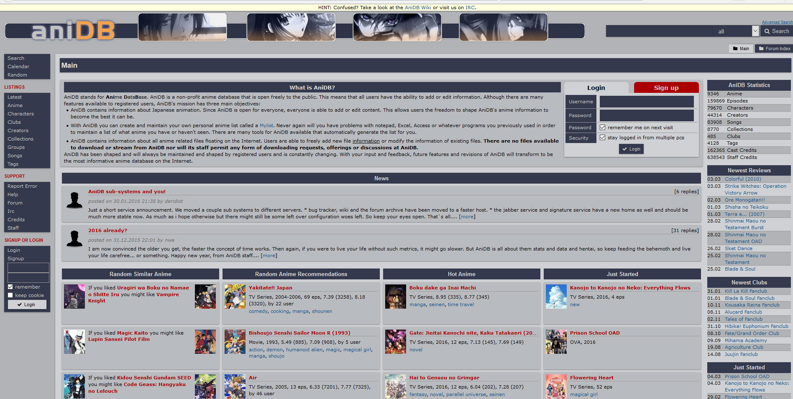

How to Discover New Anime
Introduction: How to Discover New Anime
Most call it the rut, some call it post show depression, and recently there was an ad on a couple channels for some new TV that mentioned it. Regardless of what you call it or how you try to spin it, that time after you watch a great show and are sad because it's over sucks. If you've just gotten into the world of anime, maybe by a friend or a funny video you saw or maybe just catching Toonami one late night, you may experience this syndrome often due to being unsure of what to watch. After all, there are millions of shows out there, but you can figure out which one would interest you. Normally people just ask anyone who they feel knows more than them about what they should watch, but that person might not always be there.
So this guide is intent on teaching how to discover new anime for yourself, keeping your gap time at a minimum. Keep in mind that this isn't a guide to online anime in general, so there's no point to talk about streaming places. There's Crunchyroll, Hulu, Netflix, Youtube, Viewster, Funimation, and a bunch of illegal sites I won't bother to name. Also torrenting, but don't do that. That's it, you now know where to watch anime online. The rest of this guide will be about growing your knowledge of anime to the point where you should never be without a series to watch if you are dedicated. Have fun and get ready to nerd out.
Step 1: Ask Your Friends!
The first and easiest method is to just ask your friends. After all, they know you, so they probably know what you like and what kind of anime would suit you best. Also unlike random internet people, you know what they like and what their bias is, so you can go in with normal expectations and know about what you're getting in for. Plus it's always fun to talk with friends about the shows you have seen and loved
Step 2: Make a List!
You may have seen a couple anime at this point, maybe to the point where you no longer can count them on one hand. If that's so, keeping an active list might be helpful in remembering everything you've seen. But if that was all, you could make one it word, or notepad, or even just a sticky note. What you want to do is use a Anime list website. Some examples area
- myanimelist.net
- hummingbird.me
- anilist.co
- anime-planet.com
- animenewsnetwork.com
- anidb.net
- animenfo.com
All of these sites have pro's and con's but by far the most popular is MyAnimeList, mostly due to it's easy functionality, large database of entries, frequent updates, and the ability to customize the CSS of your list. Most of the other websites even allow you to import your MyAnimeList list through their exporting into a xml file feature. But the advantages of a website list aren't just that, it's also about the connections it gives you. With most of these list sites, not only does it give you a nice platform to make a list, it also works well as a recommendation engine. This is because most of the websites allow for users to review anime and recommend others based on which one you liked. You can also publicly rate the anime and see what others think along with a global average.
Step 2B: Recommendation Engines
Another advantage to MyAnimeList is that since it is the standard, a lot of people have made recommendation engines for it. Websites such as
Take you MyAnimeList, often by user name, and process the raw data to give you more advanced statistics about what kind of anime you like, as well as offering recommendations based on your overall taste. Even better, most websites also rate different based how high your ranked it, meaning if you loved a series and gave it a 10/10, it will have more impact on your recommendations than a show you rated 5/10. In addition, almost every rating system is different, meaning you'll find different ideas with each website.
Step 3: Online Community
Congratz, you've now watched more anime than most people do, and you have a neat public list to show everyone how much of a nerd you are. I'm sure along your journey through the internet to find recommendations and your favorite list site, you came across some mentions of various anime discussion forums. While quite a few of the websites previously mentioned contained forums for discussion, none were the focus and as such aren't the best in terms of discussing your past time. No, one of the best communities by far to discuss anime on is Reddit (big surprise).
The /r/anime subreddit is great for discussing any sort of anime that you wanna talk about, as well as finding cool art pieces, funny pictures, and will no doubt expose you to a variety of new anime you didn't know about/ didn't know was as popular before. In addition, they also have discussion threads for each episode of airing anime (we'll take about that later) and occasionally they will go back and rewatch anime and talk about it as a group. Think of them like an online version of an anime club, except it doesn't matter if they don't shower. If more analytical and thought provoking discussion is more your speed, then reddit.com/r/trueanime might be more up your alley. They focus more on in depth discussion on the genre itself, individual parts, and the normal show to show discussions. In addition, the website has different subreddits for a lot of the more popular series, with everything from /r/ShingekiNoKyojin to get your survey corps on, to /r/OneTrueTatsuya for more of a silly experience. As par usual for how Reddit works, you can pretty much find a decent discussion going on for anything, and anime is no different.
Another website with lots of anime stuff going on, albeit harder to pinpoint exactly, is Tumblr. Obviously due to Tumblr's nature of separate blogs, I can't really link to any specific places, but if you go searching there are plenty of fan art, discussion, and gif posting blogs for any anime under the sun. Especially Hetalia.
Step 4: Youtube Reviewers
So hey, you've now joined the community, and you've seen a bunch of anime, you've made a list, you've done it all. Ha ha ha, just kidding. One of the things you might have noticed while playing around on reddits is the various YouTube videos of people talking self-importantly about anime. You are probably wondering who these people are. Well it's simple, they are the YOUTUBE REVIEWERS. There are quite a number of lovely men and women on the YouTube that subject themselves to many many anime, and bring you the reviews so you can find the ones you love. These people have the advantage over your average jo shmo on an review site or Reddit because they usually put a lot of work into their reviews, as they want to gain subscribers and become famous. They also are likely to subject themselves to awful shows as scathing rants are popular on YouTube. Of course, the goal of any expert reviewer is not just to state their opinion on the show, but to help you figure out if the show is something you would like. Also, for some people, video format and actual voices can be easier and more interesting to consume than just text or pictures. Some classic good YouTube reviewers are
- Glass Reflection (channel: GRArkada)
- Anime Zone (channel: gigguk)
- Should you Watch (channel: DouchebagChocolat)
- BakaShift Anime Reviews (channel: BakaShift)
- Anime Truth/ Critical Anime Overview (channel: ThatAnimeSnob)
- Various Shows (channel: DigibronyMLP)
- OKKO Anime Club (channel: OKKOAnimeClub)
Unfortunately one of the problems with YouTube reviewers is most of them are very inconsistent and upload randomly. All of them have very consistent quality however, so you know what you're getting in to. There are many more reviewers I haven't even mentioned either, so exploring to find the one's you like helps as well.
Step 5: Airing Shows
So okay, I get it. You've seen all the big old shows, you know the staples, you know the community, and you’ve seen the reviews. But you have heard about it on the subreddits, seen people talk about watching them on YouTube, you're ready for Airing Shows. Now anime doesn't just come from the void or anything, it airs like everything else. Anime Airs in seasons like the following
- Winter (January - March)
- Spring (April - June)
- Summer (July - September)
- Fall (October - December)
Now there are a couple important terms to understand when talking about airing anime. Now the season the anime is airing during is either winter, spring, summer, or fall. But the the season of the anime refers to something different. An anime having different seasons essentially means different productions, similar to how seasons work with western show. When a show finishes the first run or a season, then they can have another season ordered. Now there is also something called a cour. A cour refers to the number of airing seasons (winter, spring, summer, and fall) an airing shows spans. A 1 cour show spans a single season, while a 2 cour show will span two, a 3 cour three, and so on. Most common are 1 cour and 2 cour shows, which end up at 11-12 episodes and 24-25 episodes respectively. A split cour is another common type of show which refers to a show that runs for 1 airing season (or 1 cour), and then takes a season off, coming back the following one. An easy recent example is Aldnoah.Zero, which aired during the summer of 2014, took a break during the fall, and started back up in the winter of 2015. The difference between split-cour shows and shows with just two seasons is they only have a short 3 month span between seasons, so they typically are ordered into production all at once. So to review
- Airing Season - what time of year the show airs (winter, summer, spring, fall)
- Regular Season - a single production of a show
- Cour - the number of airing seasons a show spans
- Split Cour - a show that goes on for one Airing Season, takes on Airing Season off, and then comes back for the next one.
So now that you understand how airing anime works, you probably wanna know where to find out what's coming up and where to watch it. The easiest place to watch it are places I mentioned earlier that stream anime, especially places like Funimation or Crunchyroll that specialize in streaming airing anime fast. To find out what is coming out and when, there are websites like

All of these will show you what shows are airing every season, and what time they will air in japan. There are added advantages to places like livechart and anichart however, such as being able to label which anime you are watching along with ones you are considering, and easy ways to look ahead to future seasons and past seasons.
While you're watching all this anime, you can also discuss with others about these anime on Reddit! All of the episodes that air each season now automatically have a discussion thread posted about them on reddit.com/r/anime as soon as they go up on official streaming sites like crunchyroll and funimation, so you can either lament how bad the show is or wonder at how amazing it is.
Step 6: Conventions
Welp congratulations, you're full blown anime crazy now. You've seen crazy amounts of anime, and you're up to date on all the latest anime trends. You're more than ready for the big one, the ultimate anime experience, the convention. An anime convention is an amalgamation of a ton of different people all coming together to share their love for anime. Conventions can be expensive when you factor in tickets, travel, hotel, and food. But it's more than often worth it. To see a list of anime conventions you can check out animecons.com but some of the most popular ones are
- A-kon, Dallas, TX
- Anime Boston, Boston, MA
- Anime Central, Rosemont, IL
- Anime Expo, Los Angeles, CA
- Anime Matsuri, Houston, TX
- Anime North, Toronto, ON
- Anime Weekend Atlanta, Atlanta, GA
- Otakon, Baltimore, MD
- Otakuthon, Montreal, QC
- Sakura-Con, Seattle, WA
- Tora-Con, Rochester, NY (Not the most popular but gotta pay respects)
Conventions are a ton of everything, but there are several things that exist at every convention.
- Panels - panels are the lifeblood and the most famous part of conventions. They can be anything from Q&A with your favorite celebrities, to favorite fan theories, to information sessions. Also, most conventions allow anyone to submit a panel, so you can even try hosting one yourself. Just make sure you have a solid concept, as they do have a pretty strict vetting process usually.
- Workshops - Kind of like panels, but more focused on doing, they can be all sorts of fun activities and crafts that you can learn, or instructions on how to do more complex things, like cosplay.
- Dealers Room- Sounds a bit sketchy doesn't it? Don't worry, there isn't anything bad about these rooms, in fact they usually only allow officially licensed product. These rooms consist of main and 3rd party dealers who sell anime and anime related merchandise. They have everything here from t-shirts, to CDs, to plushies. Be warned, just like real dealers, you will spend a lot of money here.
- Showings - Frequently if you need to take some down time during a convention, the best place to find it is at a showing. They will usually have a couple different rooms that show a couple episodes of an anime, and often some pretty cool anime too.
- Artist Alley- It's like the dealers room but for artists to sell fanart and the like. Best place to find the coolest posters and other fan created merchandise, and some other fun trinkets too.
- Guests and Signings - One of the coolest parts of conventions are the various guest celebrities and voice actors. They often will run panels, but you can also see them for signing, where they will sign merchandise and talk with fans.
- Cosplay - Cosplaying is not only fun and exciting to do, it's also tons of fun to watch. Cosplaying is a staple of every convention
Conclusion
Obviously despite this being a guide, it isn't the be all end all of anime advice. I'm sure there is sights of missed, and things some people would argue are intrinsic to the anime experience that I've forgotten. But I guarantee that you will be able to find a ton more anime to watch after reading through this guide. Thank you for reading